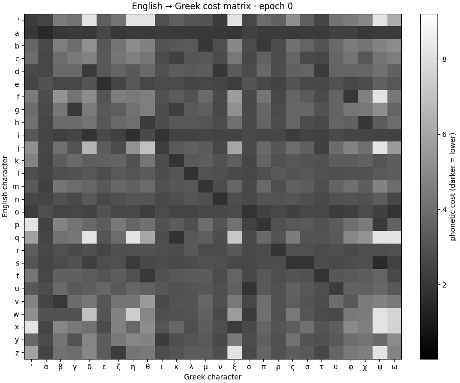
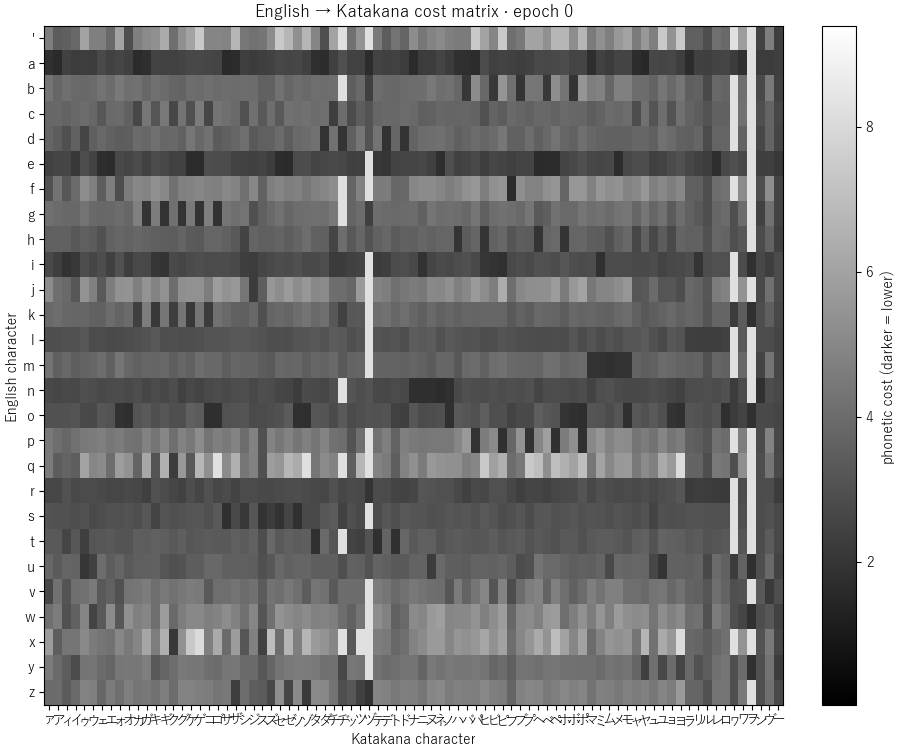
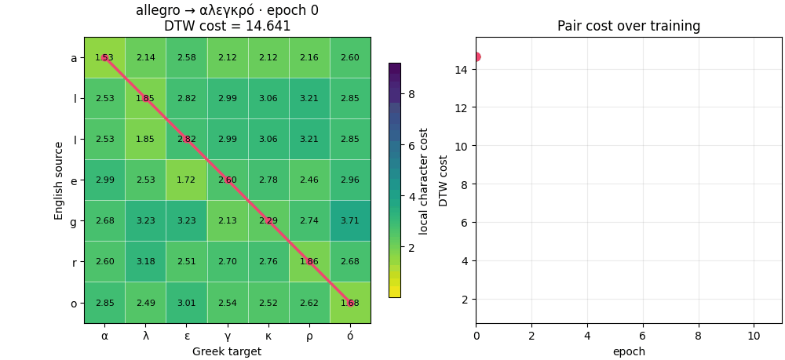
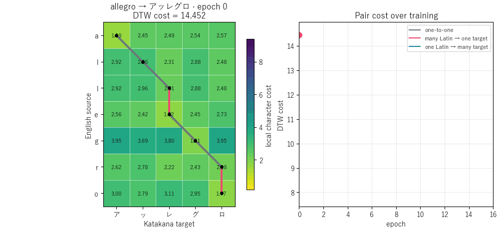

Research project · IEEE SIU 2025
Cross-Lingual Phonetic Distance Learning via Transliteration Pairs
We learn directional character-edit costs directly from paired names, then use Dynamic Time Warping to align and compare words written in different scripts—without IPA labels or hand-crafted character correspondences.
Huawei · Istanbul Technical University · inzva
- Greek
- Armenian
- Russian
- Katakana
A learned cross-script alignment
4target scripts
189,167training pairs
0gold character alignments
2learned directions per script
Method
Alignment and cost learning reinforce each other
Character co-occurrence gives an initial cost matrix. DTW finds minimum-cost paths, and the characters on those paths supply the counts for the next matrix. The loop stops when the normalized cost converges.
-
01
Initialize
Count cross-script character co-occurrences in every transliteration pair and convert them to costs.
-
02
Align
Use DTW to recover an ordered minimum-cost path, including one-to-many and many-to-one steps.
-
03
Re-estimate
Accumulate aligned character counts, normalize a new matrix, and repeat until convergence.
Training dynamics
Watch the learned geometry emerge
Each animation begins with the co-occurrence initialization and advances one training epoch at a time. Fixed color scales make changes directly comparable.

Darker cells indicate lower learned character costs.

The same learning loop is applied to a much larger target alphabet.
Case study
How the cost and path of allegro change

The path recovers repeated and one-to-many correspondences as the cost falls.

Pink and blue segments expose many-to-one and one-to-many path steps.
Evaluation
Learned distance ranks ambiguous candidates
A phonetic encoder first narrows the search space. When a bucket contains multiple candidates, learned DTW distance chooses the lowest-cost target.
Retrieval accuracy is useful extrinsic evidence, but it does not prove that an inferred alignment is the unique linguistically correct one.
Multi-candidate top-1 accuracy
Bars show the range over six phonetic filters; labels show the best value.
Open and reproducible
Generate the visualizations yourself
The repository contains the training implementation, dataset configuration, DTW path extraction, and the scripts used for every animation on this page.
Full usage instructions →# Greek matrix and allegro alignment
python scripts/visualize_training_epochs.py
# Katakana matrix and allegro alignment
python scripts/visualize_training_epochs.py \
--language katakana --source allegro
# Run the training checks
python tests/test_training.pyPublication
Paper and citation
Published at the 2025 33rd Signal Processing and Communications Applications Conference (SIU).
@inproceedings{ozbey2025crosslingual,
title = {Cross-Lingual Phonetic Distance Learning via Transliteration Pairs},
author = {Özbey, Can and Kaplan, Emre and Kahya, Berkin Deniz},
booktitle = {2025 33rd Signal Processing and Communications Applications Conference (SIU)},
year = {2025},
doi = {10.1109/SIU66497.2025.11112305}
}